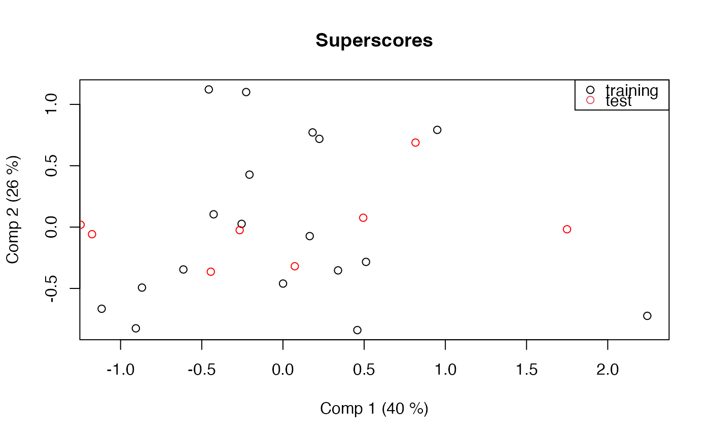

Prediction for the mbpls (MBPLS) model. New responses or scores are predicted using a fitted model and a data.frame or list containing matrices of observations.
Arguments
- object
an
mvrobject. The fitted model- newdata
a data frame. The new data. If missing, the training data is used.
- ncomp, comps
vector of positive integers. The components to use in the prediction. See below.
- type
character. Whether to predict scores or response values
- na.action
function determining what should be done with missing values in
newdata. The default is to predictNA. Seena.omitfor alternatives.- ...
further arguments. Currently not used
Value
When type is "response", a three dimensional array of
predicted response values is returned. The dimensions correspond to the
observations, the response variables and the model sizes, respectively.
When type is "scores", a score matrix is returned.
Details
When type is "response" (default), predicted response values
are returned. If comps is missing (or is NULL), predictions
for length(ncomp) models with ncomp[1] components,
ncomp[2] components, etc., are returned. Otherwise, predictions for
a single model with the exact components in comps are returned.
(Note that in both cases, the intercept is always included in the
predictions. It can be removed by subtracting the Ymeans component
of the fitted model.)
When type is "scores", predicted score values are returned for
the components given in comps. If comps is missing or
NULL, ncomps is used instead.
Note
A warning message like 'newdata' had 10 rows but variable(s)
found have 106 rows means that not all variables were found in the
newdata data frame. This (usually) happens if the formula contains
terms like yarn$NIR. Do not use such terms; use the data
argument instead. See mvr for details.
Examples
data(potato)
mb <- mbpls(Sensory ~ Chemical+Compression, data=potato, ncomp = 5, subset = 1:26 <= 18)
testdata <- subset(potato, 1:26 > 18)
# Predict response
yhat <- predict(mb, newdata = testdata)
# Predict scores and plot
scores <- predict(mb, newdata = testdata, type = "scores")
scoreplot(mb)
points(scores[,1], scores[,2], col="red")
legend("topright", legend = c("training", "test"), col=1:2, pch = 1)
